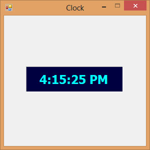

Visual Studio 2013 Lesson 31: Using Timer
[Lesson 30] << [Contents] >> [Lesson 32]
Timer is a useful control in Visual Studio 2013 . It can be used to program events that are time related. For example, you need timer to create a clock, a stop watch, a dice, animation and more. Timer is a hidden control at runtime, like the engine of an automobile. We shall illustrate the usage of timer using a few examples.
31.1 Creating a Digital Clock
Now, you are ready for the coding. Actually you would be surprise that what you need to create a clock is only a one-line code, that is:
Label1.Text = TimeOfDay
*TimeOfDay() is a Visual Studio 2013 function that returns the current time today based on your computer system time.
Click on the Timer control and enter the code above ,as shown below:
Private Sub Timer1_Tick(ByVal sender As System.Object, ByVal e As System.EventArgs) Handles Timer1.Tick
LblClock.Text = TimeOfDay
End Sub
The digital clock is as shown in Figure 31.1
Figure 31.1
{kind=link}
31.2 Creating a Stopwatch
We can create a simple stopwatch using the Timer control. Start a new project and name it stopwatch. Change the Form1 caption to Stopwatch. Insert the Timer control into the form and set its interval to 1000 which is equal to one second. Besides that, set the timer Enabled property to False so that it will not start ticking when the program is started. Insert three buttons and change their names to BtnStart, BtnStop and BtnReset respectively. Change their text to “Start”, “Stop” and “Reset” accordingly. Now, enter the code as follows:
Private Sub BtnStart_Click(sender As Object, e As
EventArgs) Handles BtnStart.Click
Timer1.Enabled = True
End Sub
Private Sub Timer1_Tick(sender As Object, e As
EventArgs) Handles Timer1.Tick
LblPanel.Text = Val(LblPanel.Text) + 1
End Sub
Private Sub BtnStop_Click(sender As Object, e As
EventArgs) Handles BtnStop.Click
Timer1.Enabled = False
End Sub
Private Sub BtnReset_Click(sender As Object, e As
EventArgs) Handles BtnReset.Click
LblPanel.Text = 0
End Sub
The Interface of the Stopwatch is as shown in Figure 31.2
 Figure
31.2
Figure
31.2
31.3 Creating a Digital Dice
We can create a digital dice easily using the Timer Control. To create a dice, you need to generate random numbers using the Rnd function. Rnd generates numbers between 0 and 1. The following statement generates random integers from 1 to 6
n = Int(1 + Rnd() * 6)
In the code, we introduce the variable m to control the length of time of the rolling process. If m is more than 1000, then the rolling process will stop by setting the timer enabled property to False. Set the timer interval to 10 so that the number changes every 0.01 second.
The Code
Public Class Form1
Dim n, m As Integer
Private Sub Timer1_Tick(sender As Object, e As
EventArgs) Handles Timer1.Tick
m = m + 10
If m < 1000 Then
n = Int(1 + Rnd() * 6)
LblDice.Text = n
Else
Timer1.Enabled = False
m = 0
End If
End Sub
Private Sub BtnRoll_Click(sender As Object, e As EventArgs) Handles BtnRoll.Click
Timer1.Enabled = True
End Sub
End Class
Running the program produces a dice with fast changing numbers which stops
at a certain number. The interface is as shown in Figure 31.3
{kind=link}
Figure 31.3